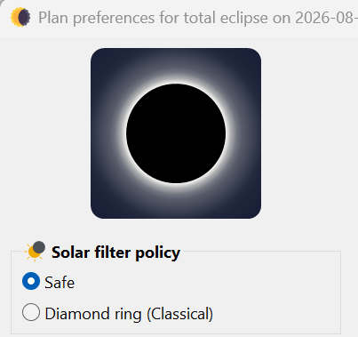
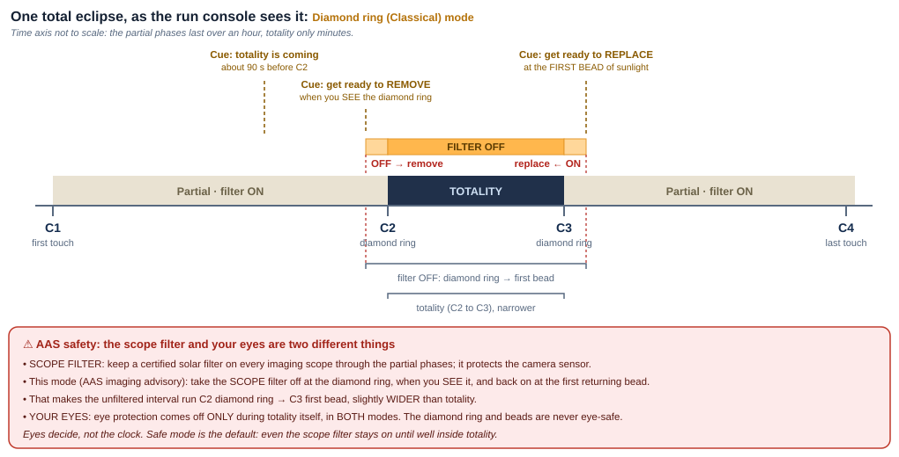

Safety & eclipse modes
The rules that protect your eyes and your gear, and the one setting that decides when the filter comes off.
⚠ The absolute rules
1. Eye safety never changes with the imaging mode. Never look at the Sun with the naked eye, or through any finder, eyepiece or unfiltered optic, without certified eye protection, except during totality itself (the bright disc fully covered). For your eyes this conservative timing applies in both Safe and Diamond ring modes. Unfiltered sunlight through optics causes permanent, instant eye injury.
2. Keep a suitable solar filter secured over the front of every imaging scope through the partial phases. Unfiltered sunlight can damage a camera sensor. If you use a separate guide scope, filter it too. In shared camera mode there is only the main scope. When that scope filter comes off is set by the eclipse mode described below. This is an equipment and imaging decision, separate from the eye rule above.
3. For your eyes, the partial phases are never safe unfiltered, including the thin crescent, Baily's beads and the diamond ring. Even a sliver of the photosphere is blinding through optics. (In Diamond ring mode the scope's filter does come off at the diamond ring to image it, but that is the camera, not your eyes.)
4. Use purpose made solar filters only. The filter must be suitable for the instrument and secured over the front of the optics. Inspect it for pinholes or damage before every use. Never look through an instrument unless its front filter is specifically rated for visual solar use. Improvised filters, exposed film, photographic neutral density filters, or welding glass of unknown grade are not acceptable.
Diamond ring versus Safe mode
HelioMaker's eclipse plans for a total eclipse carry an eclipse mode setting with two radio buttons in Plan preferences: Safe (the default) and Diamond ring (Classical). It is the single most important choice in the plan: it changes when the scope's solar filter comes off and back on, how deep the exposure brackets go around second and third contact (C2/C3), and what the audio and visual cues say. You pick it in the plan editor; it is saved with the plan.

Safe (default)
- Scope filter off: only once the disc is fully covered, with margin.
- Scope filter on: prompted early, while totality is still in progress. This is a planned, conservative cue.
- Shallower C2/C3 exposure brackets; cues worded for the conservative workflow.
- Provides: a greater timing margin around the unfiltered interval.
Diamond ring (Classical)
- Scope filter off: at the C2 diamond ring. You remove it when you see the diamond ring and put it back on at the C3 diamond ring or first bead. This window is slightly wider than totality.
- Scope filter on: at third contact, on the first returning bead, which is later than in Safe mode.
- Deeper C2/C3 brackets to capture the inner corona and prominences.
- Requires: an operator who understands the risk and has rehearsed the timing until it is automatic.
The two modes on a timeline
The eclipse and contacts are the same. The difference is when the filter comes off and back on, and what the cues say. Compare:


For partial and annular eclipses the mode is fixed to the safe behaviour (the filter never comes off), so the toggle is hidden. There is no total phase in which unfiltered viewing is ever appropriate.
Authoritative safety references
Review the current guidance from NASA eclipse safety and AAS solar filters for optics before observing or imaging an eclipse. These sources explain direct viewing, front mounted instrument filters, and the special case of totality.